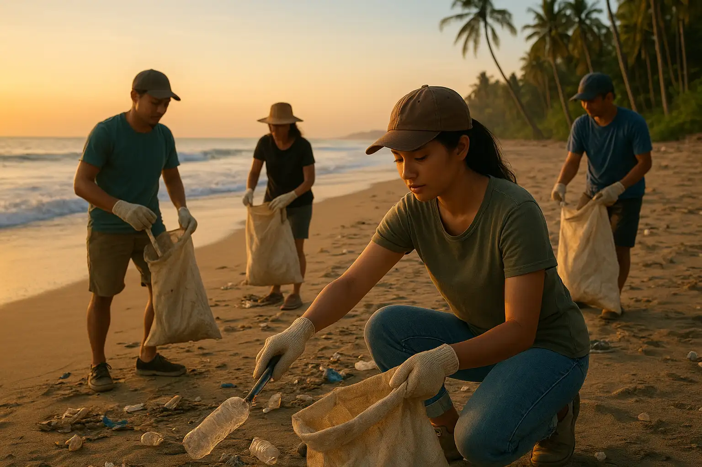
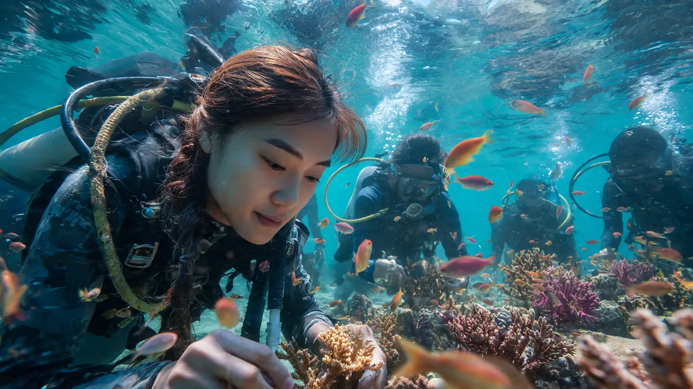
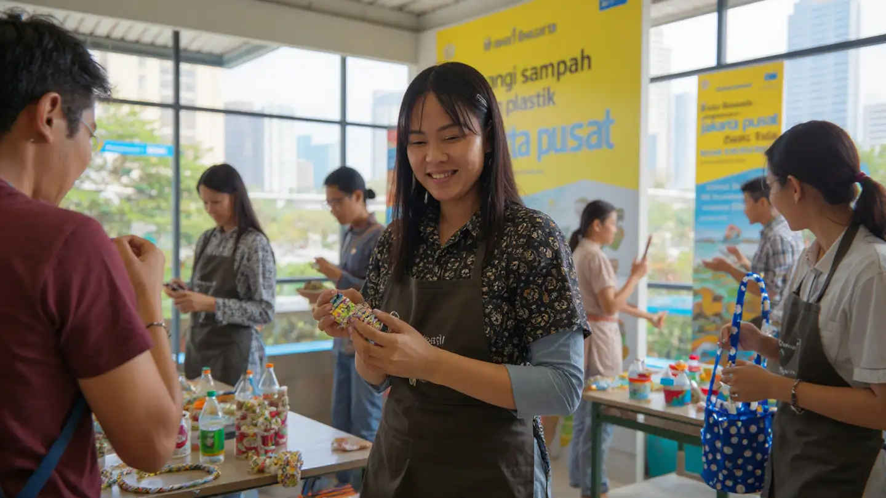

Jane Doe
janedoe@natura.com
Saldo: Rp 245.000

Kampanye Bersih Pantai dan Kesadaran Lingkungan 2025 adalah gerakan kolaboratif yang mengajak masyarakat, komunitas lokal, pelajar, hingga wisatawan untuk bersama-sama menjaga keindahan Pantai Kuta, Bali. Melalui aksi nyata membersihkan sampah plastik, edukasi pengelolaan limbah, serta diskusi interaktif tentang dampak polusi laut, kegiatan ini bertujuan menumbuhkan rasa cinta dan tanggung jawab terhadap bumi.
Ahmad Fauzi

Bersama komunitas lokal, kegiatan ini berfokus pada penanaman bibit karang dan edukasi tentang pentingnya menjaga ekosistem laut. Terumbu karang adalah rumah bagi ribuan spesies laut yang kini terancam oleh polusi dan perubahan iklim.
 Maria Yohana
Maria Yohana

Melalui workshop kreatif, peserta diajak mengolah sampah plastik menjadi produk baru sekaligus memahami dampak plastik sekali pakai terhadap lingkungan perkotaan.
 Siti Rahmawati
Siti Rahmawati

Program ini mengedukasi masyarakat tentang bahaya pembakaran lahan serta melatih relawan dalam teknik pemadaman dini. Dengan kolaborasi antara komunitas lokal, pelajar, dan aparat desa, kegiatan ini bertujuan mengurangi risiko kabut asap yang berdampak luas pada kesehatan dan lingkungan.
 Andi Saputra
Andi Saputra

Event ini mengajak masyarakat dan pelajar untuk menanam bibit mangrove di kawasan pesisir Surabaya. Mangrove berperan penting dalam mencegah abrasi, menyerap karbon, serta menjadi habitat bagi berbagai satwa pesisir.
Dewi Kartika

Sungai Citarum dikenal sebagai salah satu sungai paling tercemar di dunia. Melalui aksi bersih-bersih dan edukasi pengelolaan limbah, komunitas ini berupaya mengembalikan fungsi sungai sebagai sumber kehidupan masyarakat.
Lestari Anindya